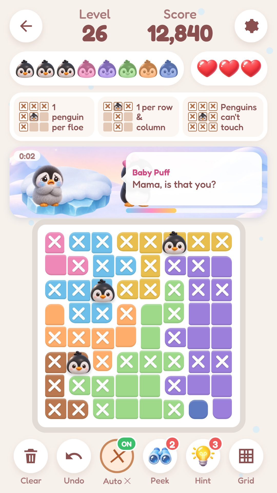
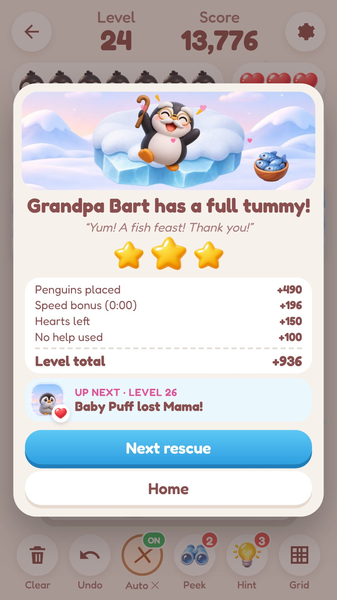
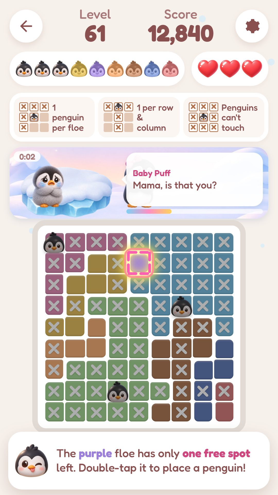
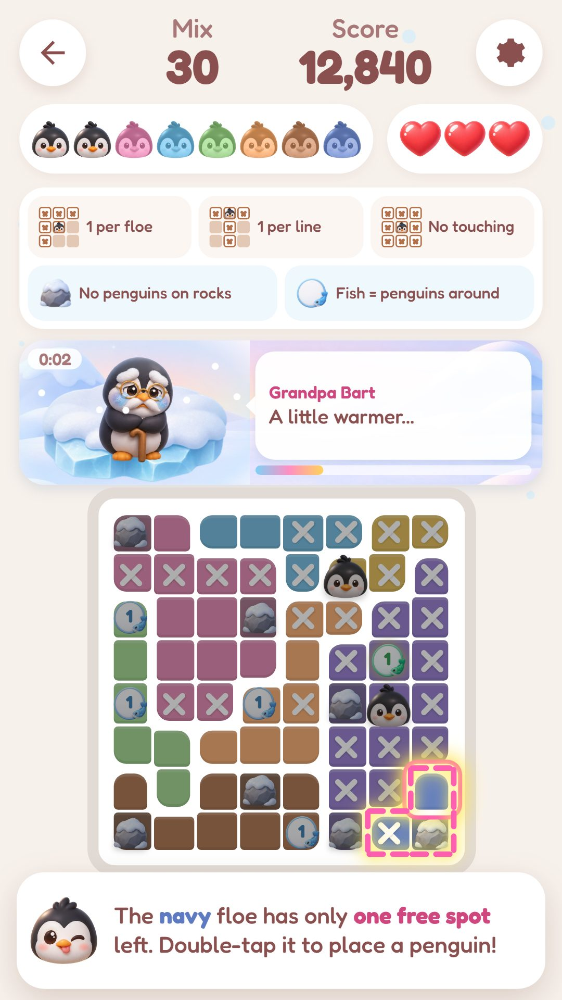
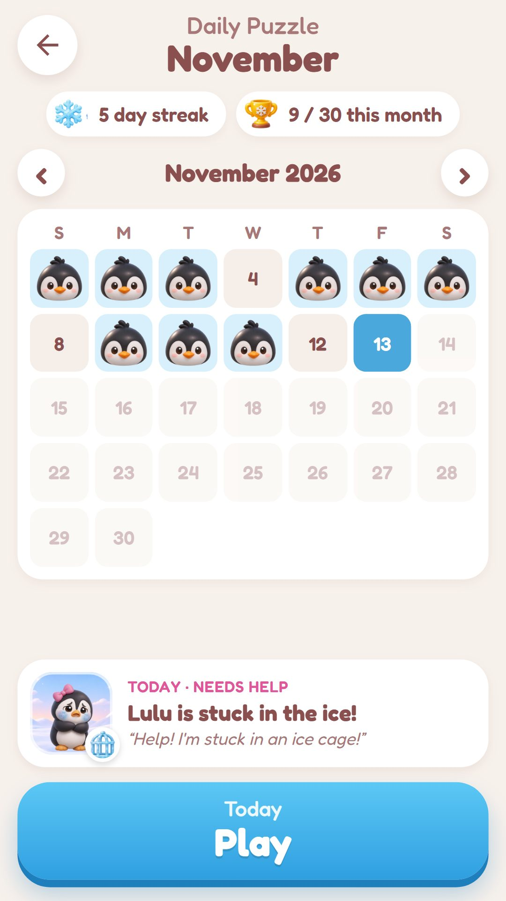
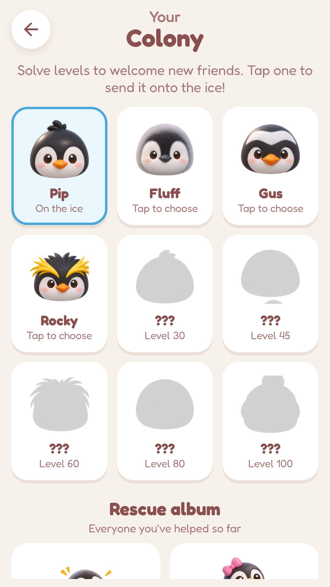

Every puzzle is a rescue
Baby Puff is lost, Lulu is stuck in an ice cage, Grandpa Bart is freezing and Granny Dot is hungry. Every penguin you place helps, and solving the level sets your friend free.
Every penguin needs its own ice floe! Place one penguin on every colored floe, one in each row and column, and never let two penguins touch. Simple rules, deep logic, no guessing.
Pengdoku is brand new and in closed testing on Google Play. The links work once your Google account is on the tester list and the test release is approved.
Baby Puff is lost, Lulu is stuck in an ice cage, Grandpa Bart is freezing and Granny Dot is hungry. Every penguin you place helps, and solving the level sets your friend free.
Stuck? A hint shows the next logical step and explains why. Every puzzle has exactly one solution you can reach with pure logic.
Penguins stay where you put them. Mark spots with an X, drag to mark many, and turn on Auto X if you like. Undo, Peek and grid coordinates are always there.
Snowy rocks block some squares. No penguin can stand on a rock.
Fish counters show how many penguins are in the 8 squares around them, like friendly minesweeper clues.
Long Sight penguins see far: no two may share a diagonal. Blizzard Mix combines every rule for experts.
Actual screenshots from Pengdoku 0.4. Tap an image to view it larger.






500 levels from 5×5 to 10×10, endless play beyond that, a daily puzzle calendar with streaks, a Colony of 9 penguin friends and a Rescue Album. It plays fully offline on phones and tablets.
No ads, no account and no data collected: your progress stays on your device. See the privacy policy and terms of service.
Tell us what you think at mzagames@proton.me. Please avoid adding unnecessary personal information.